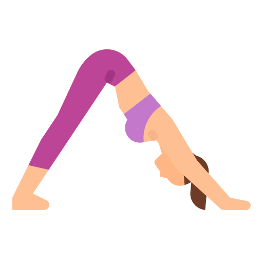

Stretching with yoga

Stretching, as it relates to physical health and fitness, is the process of placing particular parts of the body into a position that streches the muscles and associated soft tissues. Basically little more technical than just swinging your leg over a park bench we can understand it as the act of releasing tension from the muscles, joints, ligaments Not only makes your body feel good, but it’s health benefits will reduce the effects of aging and leave you feeling and looking younger.
Benefits Of Streching
Stretching on a regular basis can have several health benefits. Here are five benefits that stretching has
- Increase your flexibility, which is crucial for your overall health
- Helps improve your performance in an athletic event or exercise.
- Improved circulation and increases blood flow to your muscles
- Stretching the muscles for posture will likely help to decrease back pain.
- Stretching can decrease muscle soreness
Lets Stretch
Downward Dog
- Begin on your hands and knees.
- Align wrists under shoulders and knees under hips
- Tuck toes and lift knees off the floor
- Gently straighten legs as you lift hips up and back so your body forms an inverted V.
- As your muscles relax
- try to straighten legs more and sink heels toward the mat
Low Lunge

- Keep your right foot forward between your hands
- Lower your left knee , keeping the right knee over right ankle
- slide the left knee back
- Flip the top of your left foot to the floor
- Get your arms out to the sides and up overhead
- Tailbone toward the floor and look up
- Repeat on the other side.
Bridge Pose
.png)
- press your hipsup and your back and hands down
- Hold for 10 to 15 breaths.
High Lunge Quad Stretch
.png)
- Step your left foot back to come into a high lunge
- Then gently bending your back leg until you feel a quad stretch.
- Lift back to the start.
- Raise and lower three or four times
- Repeat on the other leg.
Front Stretch
.png)
- Stand with your left foot in front facing forward and your right foot back, turning out your toes at a slight angle
- Square both of your hips to face forward place your hands on your hips.
- Bend at your hips to fold your torso forward, tucking your chin into your chest.
- hands down to the floor
- Hold this pose for 20 seconds.
Dhanurasana
.png)
- Lie on your stomach with your arms alongside your body
- Bend your knees and reach back with your hands to grasp the outside of your ankles.
- Lift your shoulders and chest off the ground
- Keep your head looking forward
- Repeat 1 to 2 times.